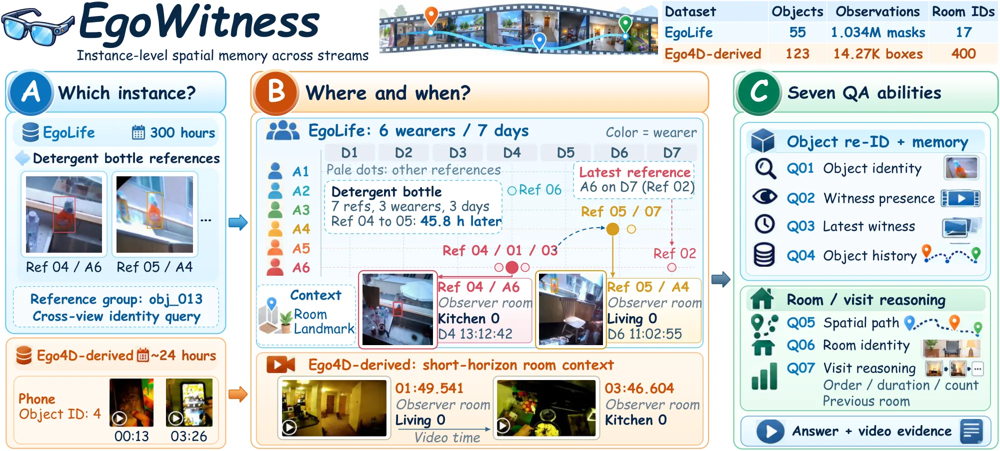
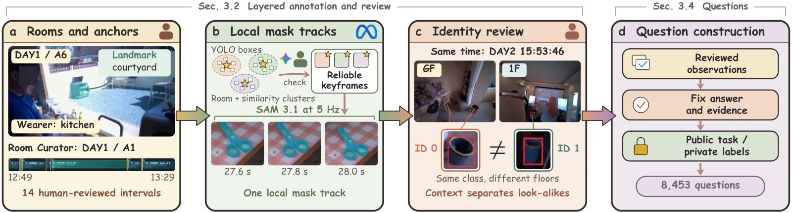
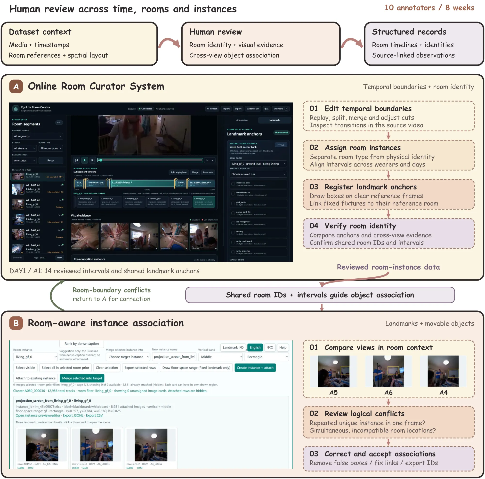
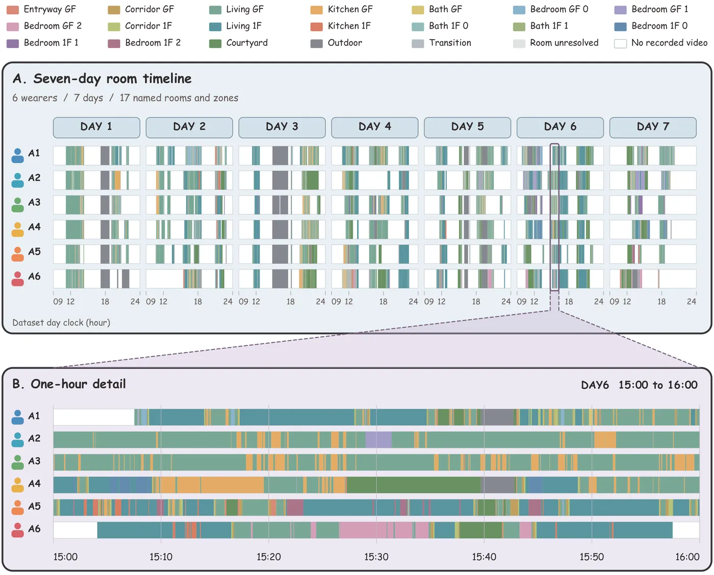
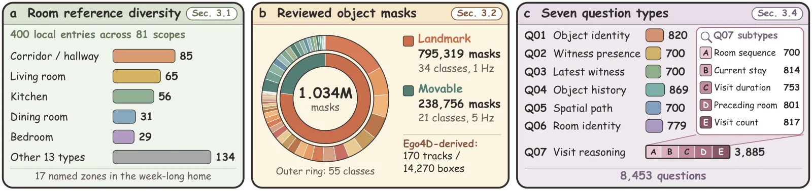
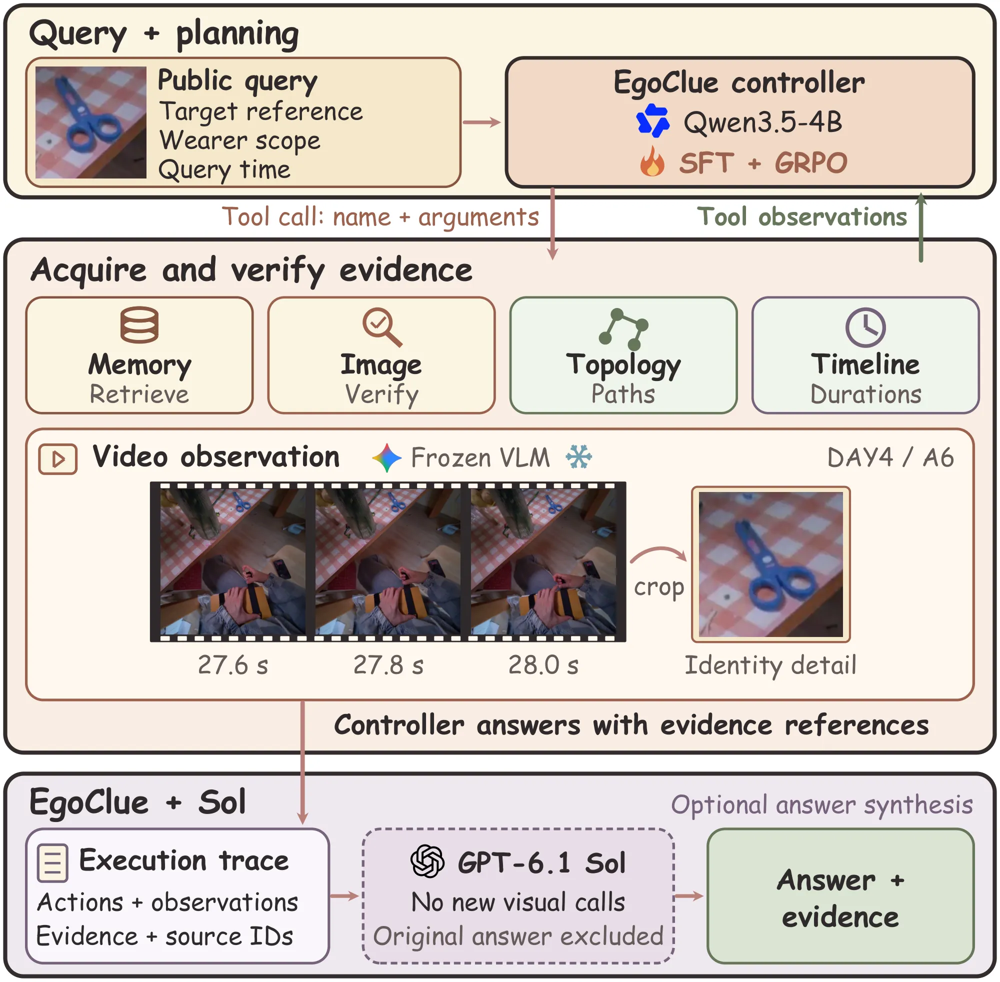
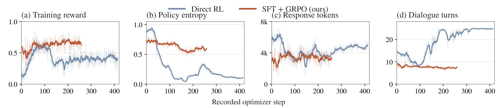
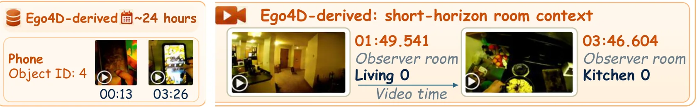
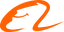
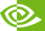

Research question
Can a model tell which physical object it saw, when and where it saw it, and who else saw it, across a week of video from several wearers?
Existing long-video benchmarks mainly test events, object categories, or relative locations. They rarely test whether today’s object is the instance seen days earlier, or who saw it last.
An instance-level spatial-memory benchmark
8,453 human-verified questions over about 324 hours test seven abilities, from object identity to room visits.
Twelve direct VLMs struggle most when identifying who saw an object last. 2Room-guided, human-reviewed annotations
1,034,075 masks of 34 registered landmark instances at 1 Hz and 21 movable-object labels at 5 Hz.
Linked through 17,269 room intervals and reviewed identities. 3EgoClue, a spatial-memory agent
Five tools retrieve candidate intervals, verify instance identity, and compute room paths and visit durations.
SFT and GRPO raise its 4B controller from 23.64% to 72.65%, and trace synthesis reaches 74.85%.Abstract
Recalling where and when an object was last seen and who saw it requires recognizing it across days and people. Existing long-video benchmarks focus on events, object categories, or relative locations, leaving instance-level spatial memory largely untested in multimodal models. To address this gap, we present EgoWitness, a benchmark for instance-level spatial memory and reasoning in egocentric video. Its 8,453 human-verified questions span approximately 324 hours of week-long and short-horizon recordings and test seven abilities, from recognizing an object or room to recalling who saw it and reasoning about room visits. Over one million reviewed masks of 34 registered landmarks and 21 movable-object labels are linked through room timelines. Among twelve direct vision-language models (VLMs), open-weight models reach at most 46.97% accuracy, and none exceeds 35% on identifying who saw an object last. We therefore propose EgoClue, a spatial-memory agent that retrieves candidate intervals, verifies instance identity, and computes spatial and temporal relations with five tools. Two-stage training with supervised fine-tuning (SFT) and Group Relative Policy Optimization (GRPO) raises its 4B controller from 23.64% to 72.65% accuracy on 1,320 held-out questions. Evidence-trace synthesis matches the best direct VLM at 74.85% on week-long questions and achieves 80.56% in environments excluded from training.

Annotations
A week of six wearers, annotated room by room and object by object
The week-long component builds on EgoLife: six wearers share one house for seven days in 32,001 source videos. We add 17,269 room intervals over 17 named rooms and zones, covering all recorded wearer-hours, and 1,034,075 masks of 34 registered landmark instances and 21 movable-object labels.
Room timelines: VLM proposals and human review
A VLM first proposes the wearer’s room from dense captions of the 17 shared spaces. Annotators then review and correct the proposed intervals in the Online Room Curator System, yielding 17,269 room intervals that cover all recorded wearer-hours. Each tour replays a stretch of the week at high speed against both timelines.
Object masks across the week
Clips show the 976×976 center crop used for detection, with landmark masks at 1 Hz, movable-object masks at 5 Hz, and the wearer’s room from the room timeline.
Layered annotation and review


Room observations across wearers and days

Benchmark
Seven abilities in two groups
Each question names an object or room, public references, and a wearer and time scope. Answers use observations within that scope and, for historical questions, before the query time.
Object identity and memory
Q01Q02Q03Q04Room identity and visit reasoning
Q05Q06Q07
How EgoWitness compares
| Benchmark | Scale | Span | Object identity | Place identity | Cross-wearer | QA evidence |
|---|---|---|---|---|---|---|
| EgoLifeQA | 300 h | 7 days | Object recall | Location recall | Evidence time | |
| MA-EgoQA | 266 h | 7 days | Object usage | Event context | Context windows | |
| HD-EPIC | 41 h | 3 days | Object itineraries | Fixture identity | ||
| AMB / AMEGO | 22.7 h | 14 min avg. | Interaction links | Activity zones | ||
| UCS-Bench | 170+ h | Seconds to hours | Trajectory recall | Relative places | Evidence segments | |
| EgoWitness | ~324 h | Minutes to week | Object Re-ID | Room Re-ID | Scored evidence |
| Resource | Scale | Span | Boxes | Masks | Room annotations |
|---|---|---|---|---|---|
| EgoTracks | 602.9 h | 6.13 min avg. | |||
| RefEgo | 41 h | 5 to 20 s | |||
| EgoMask | 315 videos | 5 s to 16 min | |||
| LongEgoRefer | 433 videos | 45 min avg. | |||
| EgoEnv | 1,259 scenes | Source-specific | Types + local IDs | ||
| EgoWitness | ~324 h | Minutes to week | Instances + intervals |
included in the reported protocol. not specified. QA evidence: reference evidence per question, which EgoWitness also scores. Days denote collection span, and avg. denotes mean video length. Cross-wearer requires multi-wearer evidence. EgoMask reports its test set, and EgoEnv reports the Ego4D subset with room-type intervals and local instance metadata.
EgoClue
Finding, verifying, and linking evidence with five tools
EgoClue's 4B controller decides where to look and how to combine observations. It trains in two stages: supervised fine-tuning on teacher trajectories, then GRPO with answer and evidence rewards on its own rollouts.

Retrieves candidate intervals from text summaries of captions, transcripts, and coarse categories.
Inspects intervals for targets, rooms, and events, starting at 1 FPS with local refinement.
Compares public references with individual frames.
Computes shortest paths between identified rooms.
Computes durations from observed boundaries.
Worked examples: direct answers versus EgoClue’s search
Direct VLMs answer from up to 32 sampled frames. Replay EgoClue’s recorded tool calls and their summarized observations for the same question.
Results
Open-weight VLMs trail, and EgoClue matches the best direct VLM
Accuracy in percent from Table 3 of the paper: 1,320 week-long and 787 cross-environment questions. Direct VLMs use public references and up to 32 frames, and all agents share the same execution budget.

Cross-environment
Tested in environments EgoClue never trained on
Beyond the shared house, EgoWitness adds 787 short-horizon questions from Ego4D-derived recordings that span 23.46 hours. We align EgoEnv room annotations with EgoMask and RefEgo object annotations by source-video ID and time interval. EgoTracks supplies tracking lineage, and ego_plan provides full-duration copies of 15 videos. The 400 source-local room references span 81 scopes and 18 room types.

GRPO raises EgoClue from 68.11% after SFT to 78.40%, with Q04 rising from 43.20% to 85.21%.
Cross-environment results
Accuracy in percent. Q01, Q04, Q06, and Q07 contain 120, 169, 80, and 418 questions. Macro weights these four abilities equally, and Micro weights all questions equally. Bold marks the best Micro within each group.
| Model or system | Q01 | Q04 | Q06 | Q07 | Macro | Micro |
|---|---|---|---|---|---|---|
| Direct visual reasoning, ordered by Micro | ||||||
| Gemini 4 Argon | 90.00 | 95.27 | 83.75 | 82.06 | 87.77 | 86.28 |
| Claude Opus 5.5 | 77.50 | 94.08 | 80.00 | 76.56 | 82.03 | 80.81 |
| GPT-6.1 Sol | 70.83 | 73.96 | 56.25 | 66.27 | 66.83 | 67.60 |
| Qwen3.8-27B | 53.33 | 76.33 | 62.50 | 51.20 | 60.84 | 58.07 |
| Gemma 4 12B | 49.17 | 55.62 | 53.75 | 46.89 | 51.36 | 49.81 |
| InternVL3.5-8B | 57.50 | 71.01 | 52.50 | 34.93 | 53.98 | 47.90 |
 VideoLLaMA3-7B | 65.00 | 43.79 | 48.75 | 44.26 | 50.45 | 47.78 |
| MiMo-VL-7B-RL | 30.00 | 86.39 | 42.50 | 35.41 | 48.57 | 46.25 |
| InternVideo3-8B | 49.17 | 65.68 | 37.50 | 35.17 | 46.88 | 44.09 |
| Qwen3.5-4B | 25.83 | 57.40 | 53.75 | 38.04 | 43.75 | 41.93 |
| VideoChat-Flash-7B | 50.00 | 50.89 | 21.25 | 33.25 | 38.85 | 38.37 |
 LongVILA-R1-7B | 25.83 | 38.46 | 42.50 | 22.49 | 32.32 | 28.46 |
| Prompted shared-tool controllers, ordered by Micro | ||||||
| Gemini 4 Argon | 69.17 | 72.19 | 86.25 | 69.14 | 74.19 | 71.54 |
| GPT-5.3 Chat | 70.00 | 76.92 | 65.00 | 64.11 | 69.01 | 67.85 |
| Gemini 3.5 Flash-Lite | 60.00 | 59.17 | 61.25 | 46.17 | 56.65 | 52.60 |
| Claude Haiku 5.5 | 57.50 | 52.07 | 48.75 | 46.41 | 51.18 | 49.56 |
| Qwen3.5-4B (base) | 22.50 | 15.38 | 21.25 | 25.12 | 21.06 | 22.24 |
| Week-long-trained systems, target environments excluded from post-training | ||||||
| EgoClue-SFT | 86.67 | 43.20 | 81.25 | 70.33 | 70.36 | 68.11 |
| EgoClue-SFT+GRPO | 87.50 | 85.21 | 83.75 | 72.01 | 82.12 | 78.40 |
| EgoClue + Sol | 84.17 | 88.17 | 81.25 | 76.32 | 82.47 | 80.56 |
Data sources
- EgoLife: Towards Egocentric Life Assistant. Yang et al., CVPR 2025. Project page
- Ego4D: Around the World in 3,000 Hours of Egocentric Video. Grauman et al., CVPR 2022. Project page
- EgoTracks: A Long-term Egocentric Visual Object Tracking Dataset. Tang et al., NeurIPS 2023.
- EgoMask: Fine-grained Spatiotemporal Grounding on Egocentric Videos. Liang et al., ICCV 2025.
- RefEgo: Referring Expression Comprehension Dataset from First-Person Perception of Ego4D. Kurita et al., ICCV 2023.
- EgoEnv: Human-centric Environment Representations from Egocentric Video. Nagarajan et al., NeurIPS 2023.
- ego_plan: Media Repository. Hugging Face
Citation
BibTeX
@misc{fang2026egowitness,
title={EgoWitness: Benchmarking Instance-Level Spatial Memory and Reasoning in Egocentric Video Streams},
author={Zhengru Fang and Zehao Liu and Mingyu Tsoi and Yaoyu Zhu and Junlong Li and Fengmao Lv and Sijie Cheng and Yuanliang Sun and Fang Yang and Jun Zhang},
year={2026},
eprint={2611.25849},
archivePrefix={arXiv},
primaryClass={cs.CV},
url={https://arxiv.org/abs/2611.25849}
}Author contributions
Zhengru Fang led the project, designed the benchmark, the annotation pipeline, and the EgoClue agent, and wrote the paper. Zehao Liu, Mingyu Tsoi, and Junlong Li helped write the questions, check the answers, and train the agent. Yaoyu Zhu helped annotate and correct the data. Prof. Jun Zhang and Yuanliang Sun guided the project throughout. Sijie Cheng, Prof. Fengmao Lv, and Prof. Fang Yang read the work carefully and supported it along the way.
Acknowledgments
We thank RayNeo for data annotation, expert support, AI glasses devices, and other essential resources. We are especially grateful to Grace Zhang, Yaoyu Zhu, Jialiang Lu, and the RayNeo engineers who manually annotated and corrected the data. We also thank the EgoLife team for releasing the week-long recordings our annotations build on, and the authors of Ego4D, EgoTracks, EgoMask, RefEgo, EgoEnv, and ego_plan for the short-horizon videos and annotations.